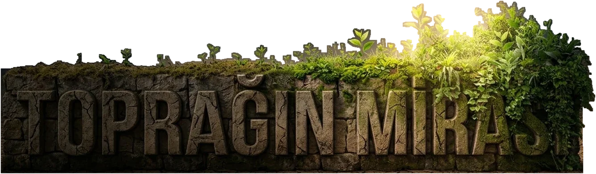
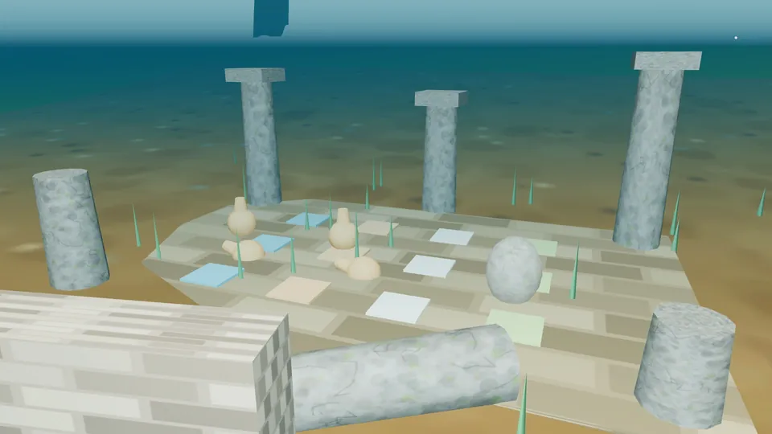
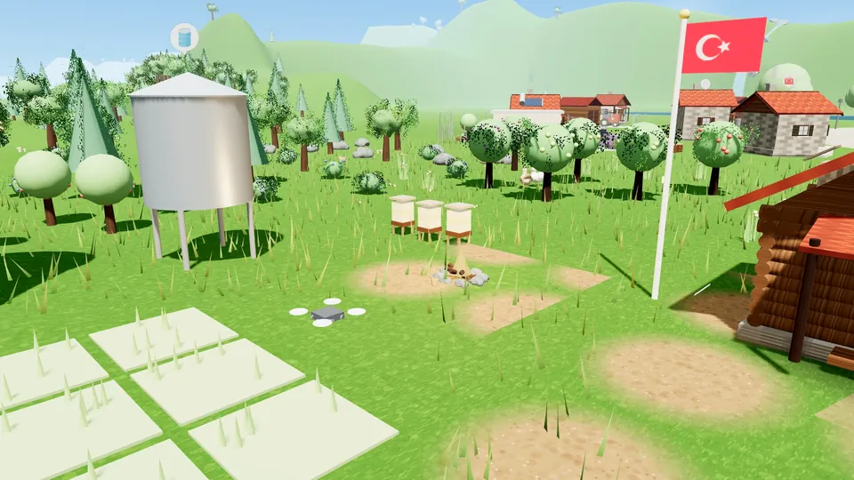
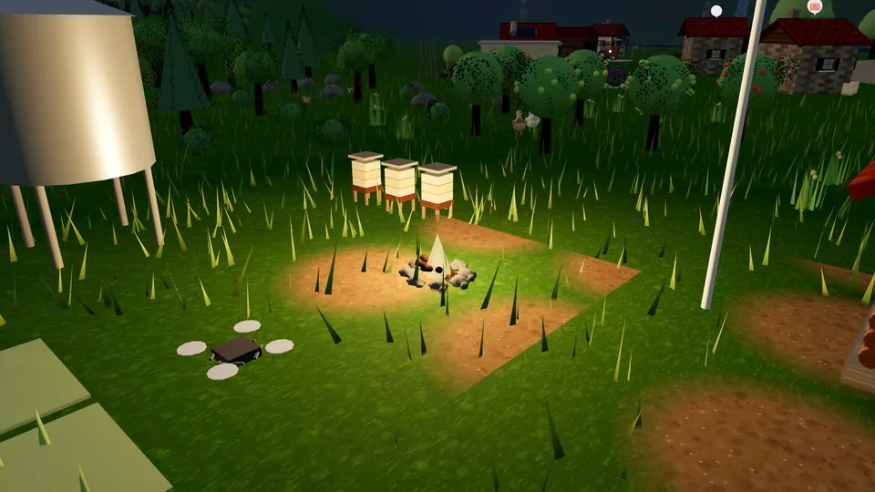
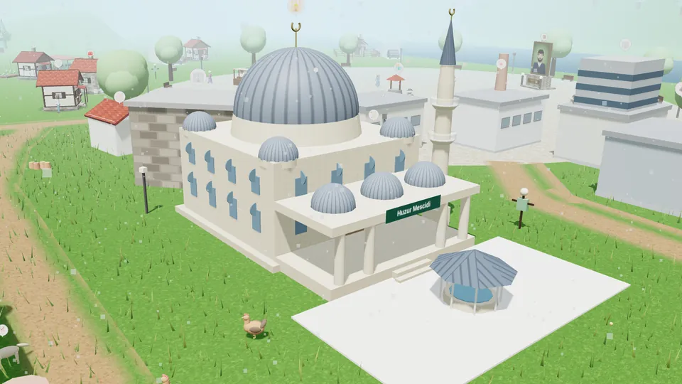
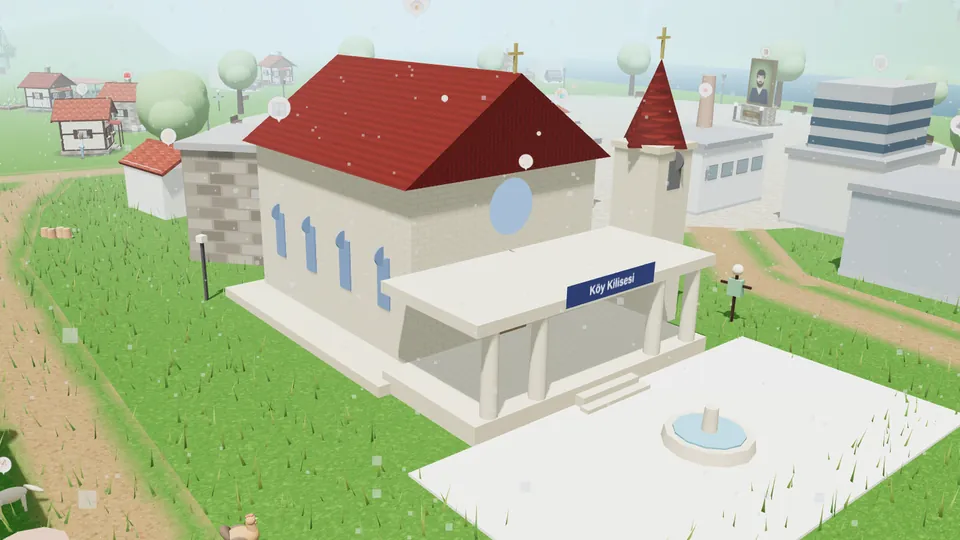
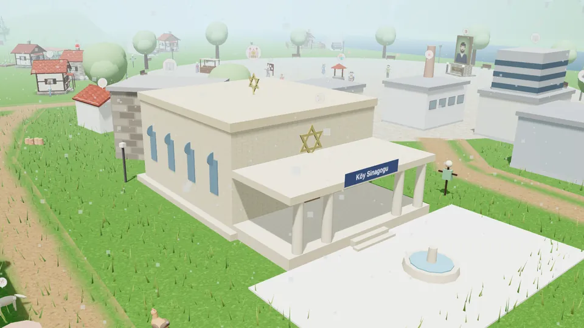

01
Sıfırdan bir çiftlik
Ekip biç, sula, hasat et. Ahır, kümes, sera, sulama kanalı ve güneş panelleriyle çiftliğini adım adım büyüt; evini, tarlanı, ahırını istediğin yere yerleştir.
Tasami'nin ilk oyunu

Dedenden kalan toprağa boş elle gel. Çiftliğini kur, köyünü büyüt, fabrikalarını işlet ve Hazar Gölü kıyısında kendi mirasını bırak.

Hikâye
Rahmetli Hasan Dede'nin torunusun. Elinde bir çanta, cebinde birkaç altınla Sivrice'ye, yıllardır seni bekleyen çiftliğe geliyorsun.
Önce odun toplayıp ip örüyor, ilk tavuklarını alıyorsun. Sonra tarlalar, ahırlar, meralar ve köy çeşmesi geliyor. Köy büyüdükçe mandıra ve kooperatif kuruluyor, ardından fabrikalar, kamyonlar ve ihracat gemileri.
Sonunda kendi holdingini kurup Hasan Dede'nin mirasını bir vakıfla köye devrediyorsun.

6 bölüm
Odun, ip, sepet ve ilk tavuklar. Dedenin evini onar, hayatta kalmayı öğren.

Ahır, tarlalar, ilk çalışanların, turistler ve göldeki dalış merkezi.

Kuzey Diyarı açılıyor: süt ve mandıra, kooperatif, banka ve Demirkol'la fiyat savaşı.

Un, yem ve şeker fabrikaları, tekstil atölyesi, toptancıyla sözleşmeler.

Meslek okulu, bursiyerler, kamyon filosu, soğuk hava deposu ve ilk ihracat gemisi.

Holding ve şirketlerin, köye hastane ve kütüphane, Hasan Dede Vakfı.
Özellikler
Ekip biç, sula, hasat et. Ahır, kümes, sera, sulama kanalı ve güneş panelleriyle çiftliğini adım adım büyüt; evini, tarlanı, ahırını istediğin yere yerleştir.

İnek, koyun ve keçi meraları; kuzular, oğlaklar, Veteriner Elif. Mandırada yoğurt, ayran, peynir, kaşar ve tereyağı üret, arı kovanlarından kavanoz kavanoz bal topla.
Yüzlerce köylü kendi işinde: kahvehane, ibadethane, pansiyon, turistler. Köyün ibadethanesi bölgene göre cami, kilise ya da sinagog olur. Gece dışarıdakilere neden orada olduklarını sor.
Un, yem ve şeker fabrikaları kur, toptancıyla sözleşme yap, kamyonlarla taşı, Mersin limanından ihracat yap. Meralardaki gübreyi biyogaz tesisinde elektriğe çevir, laboratuvarda verimi artır. Otobüsle Elazığ'a in; bankada, belediyede ve kafede işlerini hallet.

Hazar Gölü'nde balık tut: iri balık zor çekilir ama pahalı satılır. Kuzey yamacındaki şelaleyi, Mastar Dağı'nın batısındaki ormanları ve Güney ovasını keşfet; atını ıslıkla çağır, gölün dibindeki Batık Şehir'e dal, istediğin yerde kamp ateşi yak, mantar topla, mevsimlere ve kurtlara hazırlıklı ol.

Arkadaşının köyünü ziyaret et, kooperatif kur, pazarda ticaret yap, bölge telsiziyle ve sesli aramayla konuş; İtibar, Altın, Görev ve Oyun süresi sıralamalarında yerini gör.
Görüntüler
Tümü oyunun içinden, gerçek görüntülerdir.









Oyunla eş zamanlı
Düzeltme: «Tavuklarını 19 kez yemle» görevinde «Tavukları yemle» düğmesi yemlik 16'nın altına inene kadar çıkmıyordu, her yemleme için 1-2 dakika beklemek gerekiyordu. Görev açıkken yemlik tamamen dolu değilse tavukları yeniden yemleyebilirsin. Görev yokken kural aynı.
Düzeltme: «Nereye gidelim?» › İnsanlar listesinde henüz işe almadığın çalışanlar (ör. Laborant Nazlı, laboratuvar kurulmadan) çıkıyor, «Git» deyince seni kimsenin olmadığı yere götürüyordu. Artık listede yalnız köyde gerçekten bulunan kişiler var; Laborant Nazlı laboratuvarı kurup işe alınca listede görünür.
Düzeltme: Batık şehre dalarken dalgıç kalıntıların üstünde dik, havada asılı gibi duruyordu. Artık yüzeyden kalıntılara iner, yüz üstü yatay yüzer, ayak çırpar ve kulaç atar.
Erken erişim
Toprağın Mirası yakında mağazalarda. Android kapalı testine şimdi katılabilirsin.
Google Play'de kullandığın Gmail adresini bırak. Seni test listesine ekleyip davet bağlantısını e-postayla göndereceğiz.
iPhone ve iPad sürümü üzerinde çalışıyoruz.
YakındaStüdyo
Tasami, oyun tasarlayan ve geliştiren, mobil ve web uygulamaları üreten bağımsız bir stüdyo. İki kimya mühendisi tarafından kuruldu.
Mühendislikten gelen alışkanlıkla çalışıyoruz: önce sistemi kuruyor, sonra ölçüyor, deniyor ve iyileştiriyoruz. Oyunlarımızda ekonomi, üretim zinciri ve dünya bu yüzden birbirine bağlı ve tutarlı.
Adımız kurucularımızın adlarından geliyor: Taha ve Sami.
Oyun hakkında görüşünüz, iş birliği teklifiniz ya da bir uygulama fikriniz mi var? Yazın, dönüş yapalım.
✉ E-posta gönder